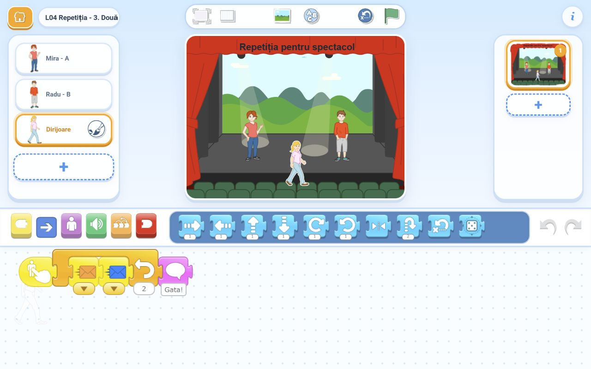

8–20 min
1. Ritmul primului artist
Două bătăi și o pauză. Repetăm tot motivul de trei ori, apoi ne oprim.
Lecția 04 · 60 de minute
Mira și Radu pregătesc un număr pentru spectacolul școlii. Unul bate ritmul, celălalt răspunde. Dirijoarea dă intrările și anunță finalul după două runde.
Construim întâi un motiv, apoi duetul și repetiția generală. Ora include pregătirea, pauza activă și salvarea. Cele două rezerve sunt în plus.
8–20 min
Două bătăi și o pauză. Repetăm tot motivul de trei ori, apoi ne oprim.
20–32 min
A face două bătăi, B răspunde cu trei. Nimeni nu întrerupe.
35–47 min · dificil
O atingere pe dirijoare: A–B–A–B. Un număr precis de runde și un final după ultima intervenție.
47–57 min · creație
Inventăm ritmuri, pauze și gesturi. Păstrăm rândul fiecărui artist și încheierea.
Rezervă · +5 min
B reproduce ritmul lui A, inclusiv pauza dintre bătăi. Două runde.
Rezervă · +10 min
După două runde A–B, adăugăm B–A o singură dată. Finalul vine după bis.
Alegem Theatre, două personaje Teen și Mother. Folosim numai sunetul Pop. Copiii nu au nevoie de importuri, fișiere copiate sau descărcări.
PDF-ul are 8 pagini: un plan concis, pregătire și capturi cu programele complete ale fiecărui personaj la fiecare etapă, inclusiv rezervele.

M1 și M2 pornesc cu Steagul sus. Puzzle-ul greu, creația și rezervele pornesc printr-o singură atingere pe dirijoarea de pe scenă. Așteaptă sfârșitul înainte de reluare. Dacă ai oprit în timpul unei sărituri, folosește Reset Characters.
Scenă fără cod · SJR · Puzzle-ul greu · SJR · Toate cele șapte proiecte
Ce am testat în browser · Instrucțiuni · PDF-ul cursului · lecțiile 1–5
Ghid online vechi · PDF vechi · Cartonașe vechi · Instrucțiuni vechi · Pachet ZIP vechi.